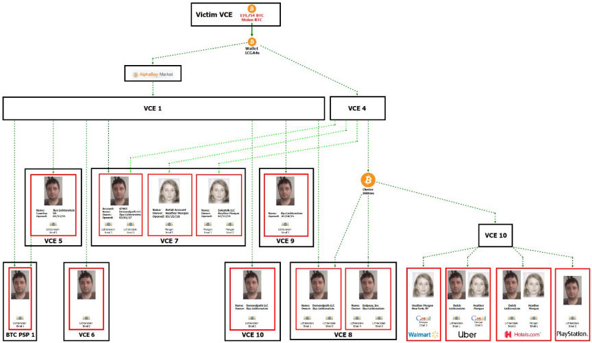
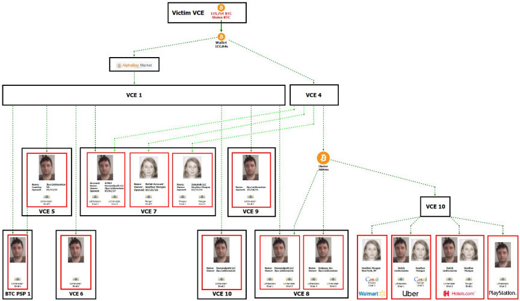

Couple Pleads Guilty to the Multi-Billion Bitfinex Hack
~2 min read | Published on 2023-08-05, tagged Hack, Money-Laundering, Pleaded-Guilty using 427 words.
A New York man and his wannabe rapper wife admitted to orchestrating a scheme to launder approximately 120,000 bitcoin he stole from Bitfinex in 2016.
By February 2022, Ilya Lichtenstein, 35, and his wife, Heather Morgan, 33, had attempted to cash out over 25,000 of the 119,754 bitcoin he had stolen from Bitfinex by moving the funds in thousands of transactions through multiple platforms and addresses.
According to court documents, investigators established that after hacking into Bitfinex, Lichtenstein initiated 2,000 transactions that moved the bitcoin into a wallet under his control.
The couple started moving the funds in January 2017. They sent a portion of the funds to multiple accounts at the now-defunct dark web marketplace, AphaBay. From AlphaBay, the funds were sent to accounts under fictitious names in a US-based cryptocurrency exchange. From the exchange, the funds were moved through multiple platforms and addresses before ending up in accounts registered to either Lichtenstein and Morgan or their shell companies at multiple crypto exchanges.

In most cases, Lichtenstein and Morgan sold the crypto and withdrew the funds into bank accounts under their control. In other cases, they cashed out through bitcoin ATMs or by purchasing prepaid gift cards. In one instance, Lichtenstein purchased gold coins and had them shipped to his home address.
In 2021 the investigators acquired a search warrant for an email address linked to Lichtenstein's account on one of the crypto exchanges. The cloud storage of the account contained encrypted files. The investigators managed to decrypt some of the files on January 31, 2022.
One of the files contained a list of 2,000 addresses and their corresponding private keys. The addresses were the recipients of the 119,754 bitcoin stolen from Bitfinex. The investigators seized a total of approximately 94,636 bitcoin from the addresses.
The account also had a spreadsheet, with the login credentials to accounts at multiple crypto exchanges. Most of the accounts had received the stolen funds. Litchsten had labeled the accounts as either frozen or emptied.
Litchsten also kept a folder with the IDs and personally identifiable information of numerous individuals. He also maintained a list of darknet ID vendors.
The couple was arrested on February 8, 2022. The government has reportedly seized an additional $475 million since the couple's arrest.
Morgan pleaded guilty to one count each of money laundering conspiracy and conspiracy to defraud the United States. She faces a maximum of five years in prison for each charge.
Lichtenstein pleaded guilty to conspiracy to commit money laundering. He faces a maximum of 20 years in prison.
Ilya Lichtenstein and Heather Morgan
By February 2022, Ilya Lichtenstein, 35, and his wife, Heather Morgan, 33, had attempted to cash out over 25,000 of the 119,754 bitcoin he had stolen from Bitfinex by moving the funds in thousands of transactions through multiple platforms and addresses.
According to court documents, investigators established that after hacking into Bitfinex, Lichtenstein initiated 2,000 transactions that moved the bitcoin into a wallet under his control.
The couple started moving the funds in January 2017. They sent a portion of the funds to multiple accounts at the now-defunct dark web marketplace, AphaBay. From AlphaBay, the funds were sent to accounts under fictitious names in a US-based cryptocurrency exchange. From the exchange, the funds were moved through multiple platforms and addresses before ending up in accounts registered to either Lichtenstein and Morgan or their shell companies at multiple crypto exchanges.

How the couple moved the stolen funds
In most cases, Lichtenstein and Morgan sold the crypto and withdrew the funds into bank accounts under their control. In other cases, they cashed out through bitcoin ATMs or by purchasing prepaid gift cards. In one instance, Lichtenstein purchased gold coins and had them shipped to his home address.
In 2021 the investigators acquired a search warrant for an email address linked to Lichtenstein's account on one of the crypto exchanges. The cloud storage of the account contained encrypted files. The investigators managed to decrypt some of the files on January 31, 2022.
One of the files contained a list of 2,000 addresses and their corresponding private keys. The addresses were the recipients of the 119,754 bitcoin stolen from Bitfinex. The investigators seized a total of approximately 94,636 bitcoin from the addresses.
The account also had a spreadsheet, with the login credentials to accounts at multiple crypto exchanges. Most of the accounts had received the stolen funds. Litchsten had labeled the accounts as either frozen or emptied.
Litchsten also kept a folder with the IDs and personally identifiable information of numerous individuals. He also maintained a list of darknet ID vendors.
The couple was arrested on February 8, 2022. The government has reportedly seized an additional $475 million since the couple's arrest.
Morgan pleaded guilty to one count each of money laundering conspiracy and conspiracy to defraud the United States. She faces a maximum of five years in prison for each charge.
Lichtenstein pleaded guilty to conspiracy to commit money laundering. He faces a maximum of 20 years in prison.